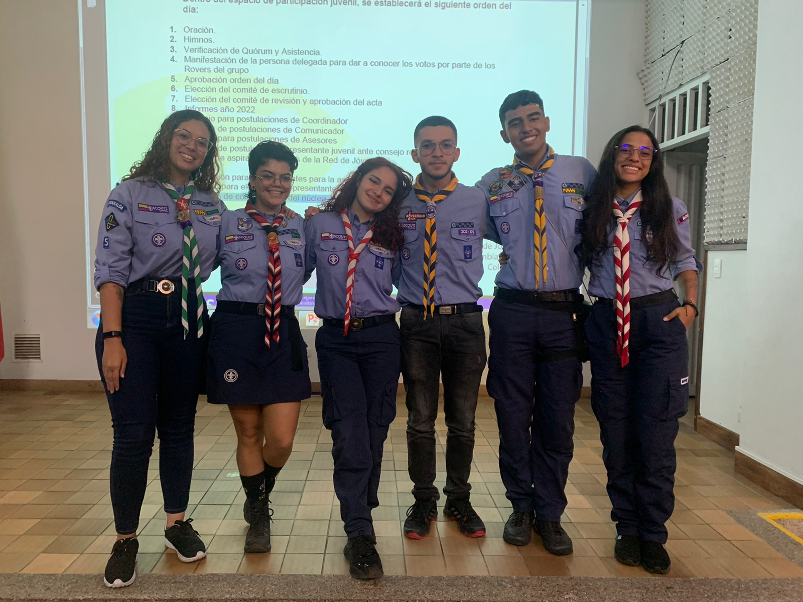

Grupo 14 Charterhouse.
Clan XIV Rovers de faerün
Región Risaralda.
Hola, soy Alejo.
Si estás leyendo esto, quizás el fin de esta etapa está cerca. Una etapa que me ha traído amigos, aventuras y aprendizajes. Es el ciclo natural de las cosas, amigo mío: en algún momento, todos tenemos que irnos. Por eso, te comparto mi bitácora de navegación. No hay un día en el que no me duerma agradecido por todo lo que el movimiento Scout ha dejado en mi vida. El roverismo se volvió uno con mi ser, pero debemos aceptar que todo tiene su final, y el mío está cerca. Espero que mi experiencia te sirva en el remar de tu propia canoa mientras te espero en un plácido puerto.
Pertenezco al clan XIV Rovers de Faerün, donde tuve la fortuna de coincidir con grandes personas que hicieron de este remar un paseo apacible por tranquilas aguas.
En el año 2023 fui parte de la Red de Jovenes de Risaralda, aprendi muchas cosas durante mi periodo que me permitieron ampliar mis alcances y conexiones dentro del movimiento.
Tuve el mejor equipo que se podria tener y más que compañeros fuimos amigos muy cercanos.
En definitiva este fue el eje que más exploté desde el inicio y es por esto que lo estaré repasando de manera inicial.
En enero del 2023, viaje junto a los grupos 13 y 18 de Risaralda al Canare. El que seria mi primer viaje scout y primer evento nacional de muchos que vendrian por delante. Este evento me permitio descubrir una nueva optica del movimiento scout y me permitiria conocer rovers alrededor del pais, con los cuales posteriormente me reencontraria en nuevas aventuras, durante este campamento las adversidades no dieron tregua, pero las afrontamos de la mejor manera sonriendo y cantando en las dificultades.
Posteriormente Risaralda fue elegido como sede para el primer encuentro nacional de redes de jovenes, por lo que fui parte del Staff organizador para dar la bienvenida a Rovers de todo el pais.
Tuve labores de apoyo junto al equipo de la red para la planeación en la previa del encuentro por lo cual recibimos un gracias regional y la satisfacción del deber cumplido. Además como valor agregado desarrolle un mapa interactivo con información relevante para nuestros visitantes, el cual tuvo más de 650 vistas. CLICK PARA VER


Llegado el mes de Julio de 2023 ya era un aprendiz más que consagrado en este eje, por lo que empecé la etapa hacia la experticia de una manera muy mia, en mi proyecto personal más que la planeación de viajes colectivos me interesaba experimentar el llegar por mis propios medios al sitio en cuestión. Es por esto que empaqué mi equipaje y viaje desde La Virginia Risaralda hasta Ibagué para el NAVEGO. De inicio no contaba con mucha experiencia viajando por mi cuenta, por lo que fue un proceso de aprender en el camino.
En este video se ven un poco de los detalles de mi viaje por el Tolima.
El mes de agosto no se quedó atras, tambien estuvo lleno de viajes y aventuras de inicio a fin, por lo que empezando por el principio, planee cuidadosamente los detalles para asistir a la cometada regional del Valle, en principio se puso en la consideración del clan el organizar un viaje colectivo, pero al no prosperar la idea tuve que empacar mi equipaje y recorrer otro departamento sobre mi moto. Me contacté con amigos locales para realizar la debida inscripción y me alojé en casa de una amiga.
En la segunda parte de agosto, ocurre un punto de inflexión en el viaje y enlace: Descubro que la unica manera de seguir viajando a este ritmo es poder hacer de estos viajes algo auto sustentable, es por esto que inicio desde mi empresa a vender productos scouts (Más detalles en el eje de empresa). Los cuales fueron un completo exito y permitieron la financiación casi completa del proximo evento al que asistiria: El EnRover 7.
Para este evento, junto a mis compañeros planeamos los detalles del viaje de tal manera que para resolver el problema del transporte alquilamos un carro y nos aseguramos de tener hospedajes para todos en casa de Rovers de Medellin. Durante todo un fin de semana estuvimos en el campo escuela Scout el temprano.
En el mes de septiembre tuvimos un nuevo evento nacional en Risaralda, el descubrimiento scouts del mundo (Reconocimiento del que hablaremos más adelante), es por esto que aprovechamos el auge de la popularidad de las pañoletas que estaba vendiendo para financiar el pago de mi inscripción y tambien la de otros rovers que se involucraron en el proyecto.
Durante este evento aprendimos muchas habilidades que serán clave en el futuro para el desarrollo de nuestros proximos proyectos en cualquiera de los ejes que contempla Scouts del mundo.
En el mes de enero, se dio lugar de nuevo en el campo escuela Scout de Antioquia el Rover Moot Nacional, es por esto que pensé de que manera hacer este viaje auto solvente y desde mi empresa fabriqué los Kits de la delegación Regional (Más detalles en el apartado de empresa). Para este viaje ya era más que un experto en la modalidad, por lo que como de costumbre me fui en moto a recorrer nuevamente los paisajes Antioqueños y posterior al evento con amigos de otras regiones especialmente la de Santander, recorrimos las calles de Medellin durante varios dias.
El mes de marzo 2024 trajo consigo un nuevo evento el CCL en Guateque Boyacá. Siendo este un punto bastante relevante para mi vida Rover, ya que tengo un nuevo punto de inflexión en mi manera de ver mi paso por el movimiento, me doy cuenta que debo asumir un rol de apoyo para los Rovers que recien inician su remar, por lo que es vital que cambie mi actitud hacia una en la que pueda influirlos más positivamente.
Como de costumbre fui en moto y me quedé una semana de más recorriendo todo el departamento del Boyacá

Actualmente me encuentro participando en el proyecto de un Tinto con Scouts en rol de monitor, ayudando a Camilo a encaminar la misión principal de la mejor manera y compartir el conocimiento que he adquirido con el tiempo con las nuevas generaciones.